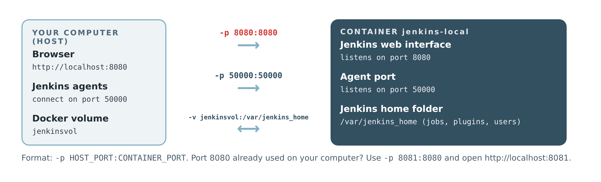
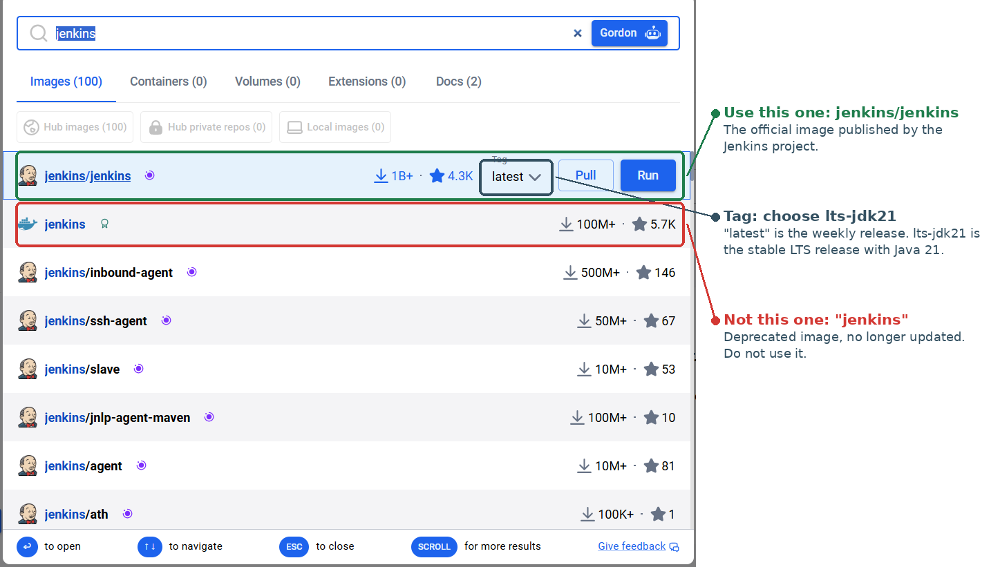
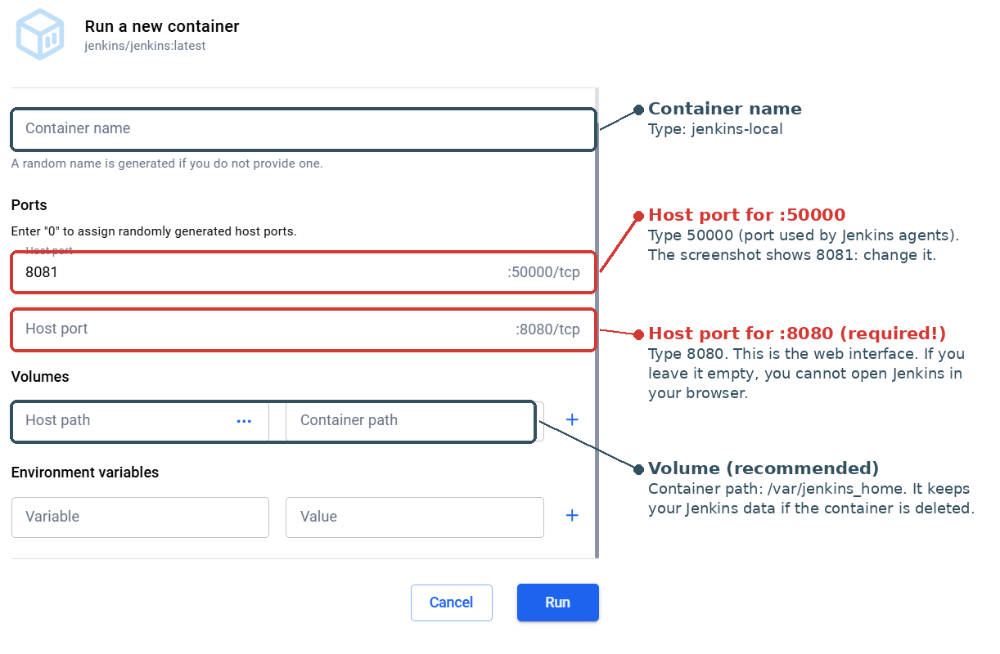

2.4 Docker (Lab Path)
Step 1: Install Docker
Install Docker Desktop for Windows or macOS, or Docker Engine on Linux, and follow the instructions on the Docker website. Then start Docker and check that it works:
docker --version
Option A: command line
2. Download the Jenkins LTS image from Docker Hub:
docker pull jenkins/jenkins:lts-jdk213. Start the Jenkins container:
docker run -d --name jenkins-local -p 8080:8080 -p 50000:50000 \
-v jenkinsvol:/var/jenkins_home jenkins/jenkins:lts-jdk21What each part means:
-d: run in the background (detached).--name jenkins-local: give the container a name, used in the next commands.-p 8080:8080: make the web interface reachable athttp://localhost:8080.-p 50000:50000: the port used by Jenkins agents (later in the module).-v jenkinsvol:/var/jenkins_home: store Jenkins data (jobs, plugins, users) in a Docker volume, so it survives if the container is deleted.
4. Check that the container is running (its status should be "Up"):
docker ps5. Get the initial admin password, which you need for the next page:
docker exec jenkins-local cat /var/jenkins_home/secrets/initialAdminPasswordYou can also find it in the container logs with docker logs jenkins-local, between two lines of asterisks.
6. Open http://localhost:8080 in your browser and continue with page 3, Setup Wizard.
Option B: Docker Desktop interface
2. Search for the image: in Docker Desktop, search for jenkins. Choose jenkins/jenkins (published by the Jenkins project), select the tag lts-jdk21, then click Run.

3. Fill in the optional settings before clicking Run:
- Container name: jenkins-local
- Host port for 8080/tcp: 8080 (required, otherwise you cannot open Jenkins)
- Host port for 50000/tcp: 50000
- Volume: container path
/var/jenkins_home(recommended, to keep your data)

4. Get the password: open the container in Docker Desktop, go to the Logs tab and copy the password shown between the lines of asterisks. Then open http://localhost:8080 and continue with page 3.